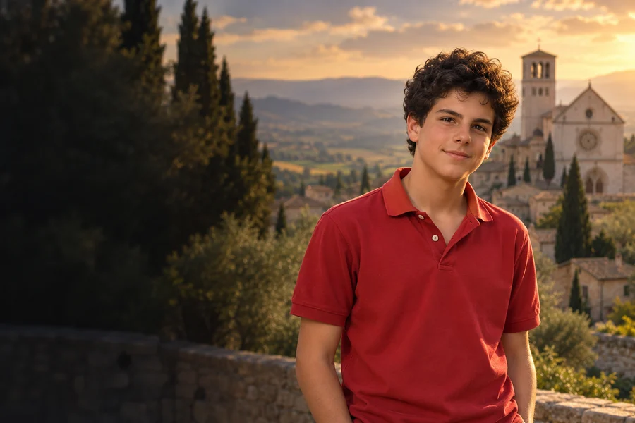

Technologia z sensem
Wykorzystaj dziś swoją umiejętność cyfrową, by pomóc komuś rozwiązać konkretny problem.
1991–2006
Obchód liturgiczny: 12 października
Włoski nastolatek, który wykorzystywał internet do dzielenia się wiarą.
Nastolatek z Mediolanu, który łączył codzienne życie szkolne i zainteresowanie technologią z głęboką wiarą eucharystyczną.
Poznaj historię jego życia →Codzienne zainteresowania i wiara mogą spotykać się w sposobie, w jaki służymy innym.
Refleksja redakcji W Modlitwie.Carlo przychodzi na świat w Londynie.
Przyjmuje Komunię w wieku siedmiu lat.
Tworzy projekt wspierający szkolny wolontariat.
Umiera w Monzy po rozpoznaniu białaczki.
Uroczystość odbywa się w Asyżu.
Leon XIV ogłasza Carla świętym.

Współczesne wyobrażenie artystyczne.Około 3 min czytania · 5 rozdziałów
Carlo urodził się 3 maja 1991 roku w Londynie, gdzie jego włoscy rodzice przebywali ze względu na pracę ojca. Jeszcze w tym samym roku rodzina wróciła do Mediolanu. Carlo chodził tam do szkoły prowadzonej przez siostry św. Marceliny, a następnie do liceum jezuitów. Lubił spędzać czas z rówieśnikami i interesował się komputerami.
Po powrocie do Włoch dorastał w dużym mieście, wśród codziennych spraw rodziny, szkoły i znajomych. Watykański opis przedstawia go jako pogodnego chłopca, który utrzymywał zwykłe przyjaźnie i był gotowy pomóc kolegom potrzebującym wsparcia.
Asyż był dla Carla miejscem wakacyjnych pobytów. Poznawał tam franciszkańską duchowość radości, pokoju i troski o stworzenie. W jego biografii pozostaje miejscem szczególnej pamięci, ponieważ tam znajduje się dziś jego grób.
Pierwszą Komunię Świętą przyjął w wieku siedmiu lat. Eucharystia stała się ważnym punktem jego życia duchowego: regularnie uczestniczył we Mszy, a gdy obowiązki szkolne mu to uniemożliwiały, praktykował komunię duchową. Był związany ze swoją parafią w Mediolanie i uczestniczył w katechizacji. Watykański życiorys opisuje go jako nastolatka, który nie ukrywał swojej wiary.
Jego religijność nie ograniczała się do prywatnych zainteresowań: była związana z życiem wspólnoty parafialnej. W źródle wymieniono również jego przywiązanie do modlitwy różańcowej oraz zainteresowanie świętymi. Obraz ten pozwala zobaczyć w nim ucznia i parafianina, a nie wyłącznie postać znaną z internetu.
Carlo uczył się projektować strony internetowe przy pracy nad witryną parafialną. Wykorzystał te umiejętności w projektach religijnych i szkolnych; latem 2006 roku opracował stronę promującą szkolny wolontariat. Przygotowywał także materiały związane z cudami eucharystycznymi. W relacjach o jego życiu powraca pomoc kolegom oraz dzielenie się kieszonkowym z osobami ubogimi.
Kontakt z projektowaniem stron zdobywał we współpracy z bardziej doświadczonymi osobami. Korzystał z komputera również przy materiałach modlitewnych. Projekt szkolny z 2006 roku pokazuje praktyczne wykorzystanie nowych umiejętności dla inicjatywy, która miała zachęcać do pomagania innym.
W październiku 2006 roku rozpoznano u niego agresywną białaczkę. Stan nastolatka szybko się pogorszył i został przyjęty do szpitala San Gerardo w Monzy. Tam zmarł 12 października, mając piętnaście lat. Jego ciało spoczywa dziś w Asyżu, mieście związanym ze świętym Franciszkiem i bliskim duchowości Carla.
Przed śmiercią otrzymał sakrament namaszczenia chorych. Jego choroba trwała krótko i miała gwałtowny przebieg. Najpierw pochowano go w rodzinnym grobie, a później przeniesiono do Asyżu. Miejsce jego spoczynku odwiedzają pielgrzymi z różnych krajów.
W kolejnych latach rozpoczęto proces dotyczący jego życia i świętości. Carlo został beatyfikowany w Asyżu w 2020 roku. Papież Leon XIV kanonizował go 7 września 2025 roku razem z Pier Giorgiem Frassatim. Kościół przedstawia go jako przykład młodego świeckiego, którego wiara wyrażała się w zwykłych relacjach, zainteresowaniach i trosce o innych.
W procesie kanonizacyjnym Kościół badał świadectwa dotyczące jego życia oraz przypadki uzdrowień przypisywanych jego wstawiennictwu. Kanonizacja jest aktem Kościoła; nie wymaga przedstawiania religijnej interpretacji tych wydarzeń jako eksperymentalnego dowodu.
Wykorzystaj dziś swoją umiejętność cyfrową, by pomóc komuś rozwiązać konkretny problem.

Zrób krótką przerwę od ekranu i poświęć ją modlitwie albo spokojnej refleksji.

Poleć bliskiej osobie wartościowy materiał, który pomógł Ci pogłębić wiarę.
Ojcze nasz, któryś jest w niebie, święć się imię Twoje; przyjdź królestwo Twoje; bądź wola Twoja jako w niebie, tak i na ziemi. Chleba naszego powszedniego daj nam dzisiaj; i odpuść nam nasze winy, jako i my odpuszczamy naszym winowajcom; i nie wódź nas na pokuszenie, ale nas zbaw ode złego. Amen.
Tradycyjny tekst modlitwy; utrwalony polski wariant.Ojcze nasz →